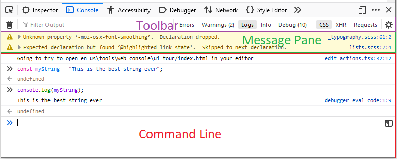

The Web Console's interface is split into three horizontal sections, detailed in the sections below.
The toolbar across the top contains a number of features:
This is where the messages appear, both those generated by the code in the page, and those generated by the commands entered on the command line.
See Console messages for a lot more detail on what the messages can contain.
You can clear the contents of the console by entering the keyboard command Ctrl + Shift + L (Windows, macOS, and Linux) or Cmd + K on macOS.
The command line starts with double angle brackets (>>). Use it to enter JavaScript expressions.
In Firefox 71 onwards, there is a new "split pane" icon on the right hand side of the command line — clicking this will open the new console multi-line mode.